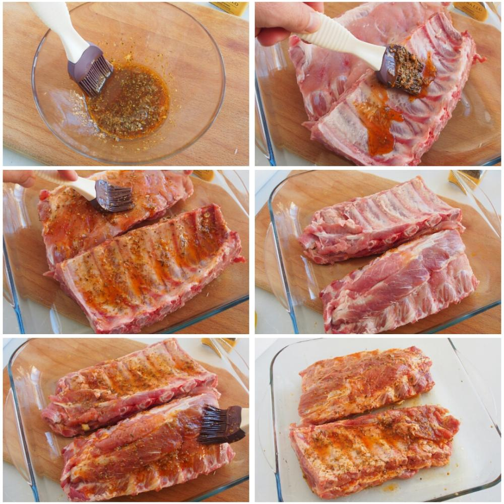

Receta de Costillas BBQ
Ingredientes
- 1 Litro de Agua
- 4 porciones de costilla de cerdo
- 2 tomates picados en cubos
- 1 pimenton mediano
- 1/2 cebolla cabezona
- 1 hoja de laurel
- 1/2 cucharadita de oregano seco
- 2 cucharadas de pasta de tomate
- 1/2 Panela
- 1/4 de cucharadita de pasta de ají
Como prepararlo
- En una olla de fondo alto, agrega el agua, las costillas, el CALDO CON COSTILLA MAGGI®, el tomate, el pimentón, la cebolla, el laurel, el orégano y la pasta de tomate. Lleva a fuego medio por 25 minutos o hasta que las costillas estén bien cocinadas.
- Retira de la olla las costillas y vierte el fondo con los vegetales en una licuadora, licua hasta integrar bien; pasa por un colador y lleva a una sartén, agrega la panela y la pasta de ají, cocina fuego bajo hasta reducir o hasta que quede espesa.
- Pon una sartén a fuego medio alto y deja calentar por 3 minutos, agrega las costillas una a una y dora por lado y lado. Retira del fuego y agrega la salsa. Sirve y disfruta
